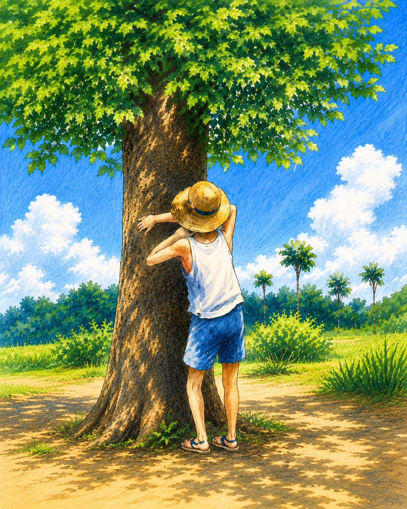
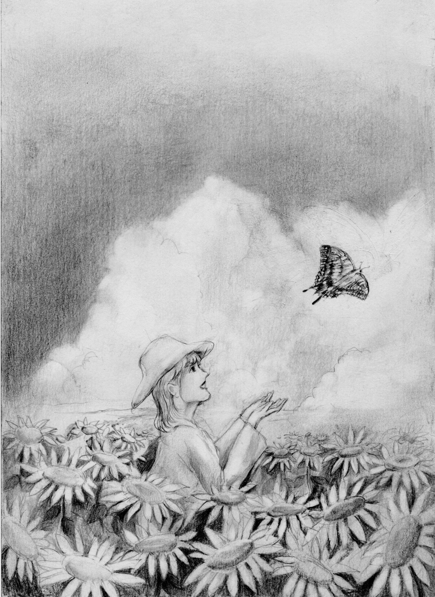
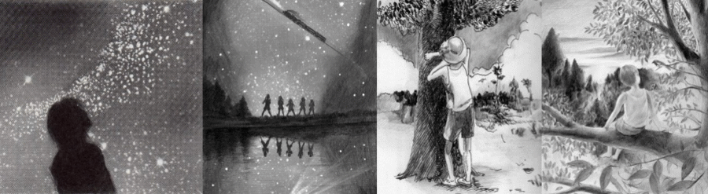
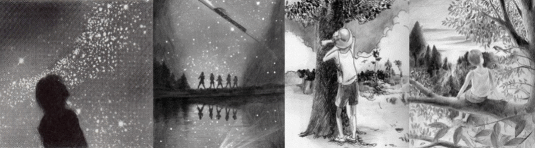
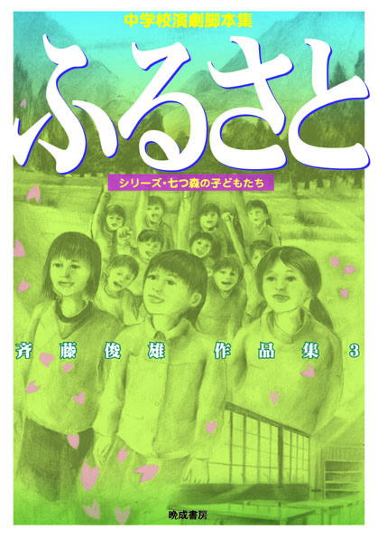

中学生が演じることで 輝く劇を求めて

◆上演願いについて
①上演脚本題名 ②上演団体名
③同 責任者氏名・立場…演劇部顧問・学級担任・生徒・保護者・劇団関係者等
④上演目的・形態(○○大会、演劇部校内発表、文化祭学校劇・学年劇[○学年]・学級劇 等)
⑤上演日・開演時刻
⑥会場名
⑦その他 脚色・潤色等の有無(題名を変える、ラストを別のドラマに変える等の大幅な改変がない限りすべて許可しています。制限時間内に上演するためのカットも行ってけっこうです。) 入場料の有無(入場料を取る場合は具体的な金額を記入してください)
以上を記入してメールを送ってくださいください ★サイトウトシオ連絡先 oo-ruri@nifty.com。
上演許可をメールで送ります(大会の規約等で私の署名・捺印等が必要な場合は、返信用の封筒を同封して上演申請書と上演許可書を送ってください)。
中学生が教育目的で上演する場合、著作権使用料は免除されますが、著作権尊重の観点から、上記の内容を必ず提出していください中学生以外でも、無料の公演に関しては脚本使用料はいただいておりません。
※多くの学校から私たちの上演を記録した映像を見せてほしいという要望が届いていますが、肖像権等の理由からすべてお断りしております。ご了承ください。尚、久喜市立久喜中学校演劇部が演じた「ふるさと」を記録した映像は、株式会社ジャパンライム社から発売されているDVDで見ることができます。
・自作上演の学校・団体 …斉藤俊雄作品を上演した学校・団体の記録です(上演予定も含みます)

◆上演願いについて
①上演脚本題名 ②上演団体名 ③同 責任者氏名・立場…演劇部顧問・学級担任・生徒・保護者・劇団関係者等
④上演目的・形態(○○大会、演劇部校内発表、文化祭学校劇・学年劇[○学年]・学級劇 等)
⑤上演日・開演時刻 ⑥会場名
⑦その他 脚色・潤色等の有無(題名を変える、ラストを別のドラマに変える等の大幅な改変がない限りすべて許可しています。制限時間内に上演するためのカットも行ってけっこうです。) 入場料の有無(入場料を取る場合は具体的な金額を記入してください)
以上を記入してメールを送ってくださいください ★サイトウトシオ連絡先 oo-ruri@nifty.com。
上演許可をメールで送ります(大会の規約等で私の署名・捺印等が必要な場合は、返信用の封筒を同封して上演申請書と上演許可書を送ってください)。
中学生が教育目的で上演する場合、著作権使用料は免除されますが、著作権尊重の観点から、上記の内容を提出していください中学生以外でも、無料の公演に関しては脚本使用料はいただいておりません。
※多くの学校から私たちの上演を記録した映像を見せてほしいという要望が届いていますが、肖像権等の理由からすべてお断りしております。ご了承ください。尚、久喜市立久喜中学校演劇部が演じた「ふるさと」を記録した映像は、株式会社ジャパンライム社から発売されているDVDで見ることができます。
上演を希望される場合は、次の内容をメールでお知らせください。
サイトウトシオ連絡先
oo-ruri@nifty.com
内容を確認後、上演許可をメールでお送りします。大会の規約などで署名・捺印が必要な場合は、返信用封筒を同封して上演申請書と上演許可書をお送りください。
中学生が教育目的で上演する場合、著作権使用料は免除されます。中学生以外でも、無料公演については脚本使用料をいただいておりません。
※題名やラストを別のドラマに変えるような大幅な改変を除き、脚色・潤色や制限時間に合わせたカットは許可しています。
※上演映像は肖像権などの理由から公開していません。久喜市立久喜中学校演劇部による「ふるさと」は、株式会社ジャパンライム社のDVDでご覧いただけます。

収録作品のイラストをクリックすると、あらすじと脚本を途中まで読むことができます。
◆後書き 「ふるさと」の後書きという名の劇
◆「演劇と教育」2016年10月号 本 新刊-旧刊 斉藤俊雄作品集3「ふるさと」 書評
★「演劇と教育」2016年11月号 実践記録「ふるさと」とともに歩く 斉藤俊雄
収録作品 ― イラストをクリックしてください

収録作品のイラストをクリックすると、あらすじと脚本を途中まで読むことができます。
「斉藤俊雄作品集2 七つ森」後書き 「七つ森 いきものがたり」
収録作品 ― イラストをクリックしてください

2016年10月、重版となりました。収録作品のイラストをクリックすると、あらすじと脚本を途中まで読むことができます。
後書き 春一番が吹いた日に〜後書きのためのインタビュー〜
この作品集がどのような思いから作られたのか、架空のインタビュー形式で紹介します。
収録作品 ― イラストをクリックしてください

収録作品のイラストをクリックすると、各作品の紹介へ移動します。
十代に贈るドラマ
全国大会参加作品など、時代を映した7作品を収録しています。
収録作品 ― イラストをクリックしてください
キャスト メイン14名 その他 人数に制限はありません。どんなに多くとも上演可能です。
上演時間 45分〜60分
自作を上演してくれた学校の一つが、津波の被害にあったことを知りました。その日から考え始めました。「自分に何かできることはないいだろうか。自分だからこそできることはないだろうか」と。そして、辿り着いたのが「ふるさと」です。
元気になれる劇が創りたいと思いました。観た人が元気になれる劇、そして、そのことによって上演した人が元気になれる劇です。
「ふるさと」は古川里美（＝ふるさと）が転校してきたことで、故郷に特別な思いを持っていなかった子ども達全員が故郷を好きになる話です。内容に震災をイメージさせる部分はあえて入れませんでした。ただただ「あったかい劇になればいい」という思いを胸に創りました。
「ふるさと」は机とイスがあればどこでも上演できる劇です。教室でも体育館でも、校庭でも上演することが可能です。音響設備は必要ありません。場面転換では子どもたちが生で歌う「ふるさと」がバックミュージックとなります。
この劇は様々な上演形態で発表することができます。演劇部はもちろん、学級劇、学年・学校劇としても上演できます。
★「ふるさと」上演の手引き
脚本「ふるさと」を途中まで読んでみたい方は次をクリック 「ふるさと」
キャスト メイン９人 その他 ４人〜１０人程度まで可
上演時間 50分〜60分(プロローグの部分をカットすることで45分にすることができます)
「アトム」はテレビアニメ版で（当時はテレビ漫画と呼んでいた）アトムの放送が始まった1963年（昭和38年）の物語です。同時にテレビアニメ版でアトムが誕生する年として設定された2013年の物語でもあります（原作の漫画での誕生は2003年）。
それはある意味において未来の物語であり、過去の物語でもあり、今の物語でもあります。
「アトム」はアトムを夢見みた子どもたちの物語であり、アトムをいまだに夢見ている人たちの物語でもあります。 そしてこれはアトムとアトムの妹ウランの物語であり、アトム＝原子とその原子の一つであるウランの物語でもあるのです。
そう聞くと深刻そうだと思う割には、笑い笑いで創られた物語であり、人によってはただ笑っているうちに終わってしまう物語なのです。
そして「アトム」は、次のことを観客に問いかける物語です。
「もし今アトムが生まれたら、アトムはどこに行くのだろう」
脚本「アトム」を途中まで読んでみたい方は次をクリック 「アトム」
キャスト メイン８名 その他 ２人〜20人程度まで可(陸上部のメンバーを増やす)
上演時間 50分〜55分
体育祭の応援シーンで幕が上がるこのドラマは、走ることを描いた学園ドラマです。そして、走ることを描くと同時に走らないことも描いた学園ドラマでもあります。
ドラマの中心人物は廃部の危機にある、３年生だけの演劇部員達です。彼女たちは部の存続させるために、必死に新入部員を獲得しようとします。その彼女たちの目に留まったのは転校してきた２年生の武藤蘭という少年です。
彼は体育祭の練習をいつも見学しているのでした。彼を勧誘しようとするのは演劇部部長で生徒会長でもある野原歩美。実は、彼女も体育祭の練習を見学しています。
運動が苦手な歩美はけがを装って体育祭の練習を見学していたのです。
そんな時、歩美は武藤蘭が前の学校で駅伝の選手だったという話を聞きます。彼が以前に通っていた学校は、駅伝の全国大会の常連校だったのです。なぜそんな彼が走ることを拒むのか。そのことを軸に、ミステリーの手法でこのドラマは進んでいきます。
互いの秘密を知った後、２人は生まれ変わろうとします。そんなラストシーンで歌われるのが、「Happpy Birthday」。 このドラマはその歌声に包まれて幕となります。
このドラマは絆という言葉が好きではない２人の絆のドラマでもあります。タスキが途切れたことで切れてしまう絆ではなく、タスキが途切れても切れない絆の物語です。
脚本「Happy Birthday」を途中まで読んでみたい方は次をクリック 「Happy Birthday」
キャスト メイン10人 その他 ４人〜１０人程度まで可(語り部をシーンごとに変えていく)
上演時間 50分〜55分
「赤と青のレクイエム」は平安時代に生きていた山姥と呼ばれる青い血を持った存在(血が青いこと以外は私達人間と同じ)と、その存在をこの世からなくしてしまおうという赤い血を持った忍者達の物語です。正確に言えばある集団が演じる「赤と青のレクイエム」の上演そのものを描いた劇です。
山姥討伐に出かけた忍者達は、山の中で菊と梅という青い血を持った姉妹に出会います。彼らの心は揺れ動きます。
最後の場面で赤い血の忍者と青い血の山姥は手と手を取り合って、遠い未来に差別のない世の中が来ることを夢見ながら死んでいきます。
突然、客席から「そこまでだ」と声がかかり、劇が止められます。彼らは「赤と青のレクイエム」を上演しているこの集団は、山姥の生き残りであることを観客に伝えます。そして、彼らは現団員達に襲いかかります。彼らが傷つけた劇団員の手から青に血が流れ出ます。劇団員は「血が青ということで差別をしないでほしい」と声を限りに観客に訴えますが、全員が舞台から連れ去られてしまうのです。舞台に誰もいなくなった後、静かに幕が下ります。
重い内容ではありますが、殺陣を取り入れることでエンターテイメントとして楽しむことがでると同時に、人権についてそして差別についてより深く考えることができると思います。
脚本「赤と青のレクイエム」を途中まで読んでみたい方は次をクリック 「赤と青のレクイエム」
夏休み (戦後７０年改訂バージョン)
キャスト メイン９人 上演時間 40分〜45分
『夏休み』は私の戦争３部作(『夏休み』『私の青空』『ずっとそばにいるよ』)の１番目の作品です。
「もう少し短い作品だと上演できるのに」という声に応えて元の作品を大胆にカットして４０分〜４５分で上演できるようにしました。
戦争の足音が近づく昭和１１年、小学校最後の夏休みを前にした七つ森小学校の６年生達は、流れ星に願いをかけます。
スポーツ万能の高田勇輝の願いはオリンピックに出ること。男勝りでオイワと呼ばれている大岩洋子の願いは女優になること。歌が得意な遠野みどりの願いはオペラ歌手になること。勉強大好きの天野満夫の願いは大学でテレビジョンの研究をすることでした。
主人公・大場憲一(通称バケ)の願いは「お化けに会いたい」。
そんな個性豊かな子どもたちが最後の夏休みの思い出作りに七つ森に肝試しに出かけます。しかし、突然の夕立に子どもたちは離ればなれになってしまいます。森で大場憲一は少女の姿をした妖怪に出会います。「お化けに会いたい」という彼の願いが叶ったのです。
少女は９年後の未来（昭和２０年）から来たと言います。そして悲しい未来を語るのでした。
夏休みの最後の日、子どもたちは再び流れ星に願いをかけます。その願いは、叶わぬ願いだと知らずに…
『夏休み』は戦争の足音が近づく昭和１１年の子ども達を７０年後の現代から回想することによって描いた作品です。切なさに思わず涙がこぼれてしまう、そんな劇を上演したい人におすすめします。
脚本「夏休み」を途中まで読んでみたい方は次をクリック 「夏休み」
私の青空(『青空』戦後７０年バージョン)
キャスト メイン１１名 その他 １０人くらいまで可(偵察にいく生徒の数を増やす)
上演時間 50分
戦争３部作の２作目に当たるのが『私の青空』です。「戦争そのものを描かず、戦争を語るドラマを創りたい」、そんな思いから現代から戦争を見つめる作品を創りました。
◆◆◆
台風接近のため全員下校となった３年１組の教室で、展示大賞を目指し、隠れて「太平洋戦争」の展示を進めている生徒達がいました。
「子どもがまだ帰宅していない」という親からの電話で、生徒達は先生に見つかります。しかし、予想を上回る台風の急接近により、生徒達と先生は学校に閉じ込められてしまうのです。
自らが創った戦争の展示の数々、空腹、爆撃のように響き渡る雷、雷による停電。戦争の展示物に囲まれた教室は、戦時中と重なっていきます。
生徒達は戦争当時この学校の生徒だった高田美奈さん(『夏休み』の登場人物・高田勇輝の妹)の体験談を暗闇の中で読み進めていきます。体験談が空襲で学校が燃えた場面にたどり着いた時、彼らの心は大きく揺り動かされるのでした。
このドラマのタイトルは『私の青空』ですが、劇中の天気は始めから終わりまで嵐です。しかし、この劇のタイトルは『私の青空』でなくてはならないのです。
◆◆◆
この作品の舞台は戦争の展示物に囲まれた教室です。
この劇の舞台を作成するためには、みんなが協力して戦争について調べ、展示物を創らなければなりません。上演する人達は、ただ劇を上演する以上に戦争に迫ることになるでしょう。
戦争を現代の視点から描きたい。『私の青空』はそんな思いで創った現代の中学生の視点から太平洋戦争を描いた劇です。
脚本「私の青空」を途中まで読んでみたい方は次をクリック 「私の青空」
キャスト メイン８名 その他 ２人〜５人くらいまで可(特攻に志願する戦闘員を演じる生徒役)
上演時間 50分〜55分
 ★中学校の制服で演じられる、特攻の物語
★中学校の制服で演じられる、特攻の物語
戦争３部作の３作目に当たる作品です。そして現代の中学生が制服で演じる太平洋戦争を描いた劇です。
見た目からどうしても大人にはなりきれない中学生が、軍服を着て大人のまねをするのではなく、中学生が中学生であることを観客に堂々と示して演じられる戦争の劇です。
登場人物は沖縄で開催される全国大会出場を目指す演劇部の生徒たちです。
上演劇で描かれているのは沖縄で行われた特攻です。練習時間を確保するためにみんな制服のまま練習します。
演劇部部長の京花は、繰り返し「全国のため」という言葉を口にします。その彼女が劇中で演じるのは、部下に特攻を迫る上官役。その上官が繰り返し口にするのが「お国のため」という言葉です。
「全国のため」という言葉と「お国のため」という言葉の持つイメージが重なるとともに、京花自身とその京花が演じる上官が重なっていきます。そして彼女が率いる演劇部は戦時中の軍隊のようになっていくのでした。
あえてラストを書くことにします。劇のラストで、登場人物達が生きている世界は広島に原爆が落とされなかった世界だということが明らかになります。
また、この物語は幽霊が登場する物語でもあります。登場人物のひとりが実は幽霊なのです。そして、この物語はよくある願いがかなって消えていく幽霊の物語ではありません。もしも願いがかなっても、ずっとそばにいる幽霊の物語なのです。
中学生が戦争の劇を演じるなどということは、広い世界の中のほんのちっぽけなことです。でも、そんなほんのちっぽけなことが戦争のない世界を生み出す糸口になることがあるかもしれない。そんな、バタフライ効果を願って創ったのがこの『ずっとそばにいるよ』です。
中学生が表現する戦争のドラマが、大人が表現する戦争のドラマよりも胸に迫ることがあるはずです。
脚本「ずっとそばにいるよ」を途中まで読んでみたい方は次をクリック 「ずっとそばにいるよ」
キャスト メイン８名、 その他 １５人くらいまで可
上演時間 ５０〜６０分
恵子は七つ森がレジャーランドになる計画を知り、それを阻止するために『七つ森』という創作劇の上演を企画します。しかし計画が始まってすぐ病に倒れます。それを引き継いだひろみは、自分では演出は無理と感じ、中学の時同級生だった恵子に演出を依頼します。
『七つ森』の舞台は、幻の銀の鷹が棲む森。森で生まれ育った少年ハヤト(銀の鷹の化身である母に育てられた)と、その森を我がものにしようとする瑠璃姫との戦いが描かれます。
ラストはハヤト達の勝利で終わるというハッピーエンドです。
第一部はその練習風景(制作過程)が描かれます。主役を演じる少年隼人はアメリカから日本に来たばかりで、漢字が苦手です。そのため台詞間違いを多発します。
子ども達が中心の集団はやる気だけはあるのですが、毎日毎日失敗ばかり、そして失敗が解消されないまま本番当日を迎えます。
第二部は『七つ森』の実際の上演です。上演中も、次から次へとトラブルが起こります。台詞忘れに、台詞間違い…などなど。 そのトラブルによって劇は予定されていた内容と少しずつ違ったものとなっていくのです。
ラストシーンではトラブルのフォローが裏目に出て、主人公のハヤトが銃で撃たれる状況が生まれてしまいます。 うろたえる子ども達。このままではラストシーンで主人公のハヤトが死ぬことになってしまいます。
最終的に、子ども達は、用意されてたハッピーエンドとは違った、感動的なラストシーンにたどり着くのでした。
ラスト５分前まで笑いの笑いの連続で劇は進んでいきます。そしてラストはどんでん返しが待っている。『七つ森』はそんな楽しさいっぱいの劇です。
脚本「七つ森」を途中まで読んでみたい方は次をクリック 「七つ森」
キャスト メイン１０名、 その他５名程度
上演時間 ５０〜６０分
「とも」は小林知輝と森山智花と友川大空(そら)の３人の「とも」の物語であり、友の物語でもあり、共(とも)に生きる物語でもあります。
３人は七つ森総合病院に入院しています。知輝は七つ森中学校の２年生で演劇部員です。智花は隣の七つ森女学院の２年生で演劇部員です。
智花が創った『虹の彼方に』という作品は、東関東中学校総合文化祭で最優秀脚本賞を受賞していました。
ひょんなことから３人の「とも」が病院内で出会い、知輝は智花の目の前で大空君(難病で入院している小学生)に『虹の彼方に』がどんな物語か話すことになります。そして知輝の見事な語り口に、大空君だけでなく作者である智花も物語世界に引き込まれていくのです。
『虹の彼方に』は病院に入院している子どもたちの物語です。そして、そのラストシーンでは少年が、みんなに感動的なメッセージを残して天国=虹の彼方に昇っていきます。
少年の病気は大空君の病気と同じでした。大空君は、泣きながら病室を出て行きます。多くの人を感動させた『虹の彼方に』は、同じ病気と闘っている大空君を苦しませることになったのです。智花は知輝の目の前で最優秀脚本賞の賞状を破きます。
「とも」は、死を感動の道具として使う多くのドラマへのアンチテーゼとして創られたものです。この物語は「共に生きる」物語としてラストに向かって進んでいきます。
「とも」は難病の子どもを題材とした劇ですが、難病で死んでいくこと、または難病を克服することを感動の道具にしないという強い思いから生まれた劇です。
脚本「とも」を途中まで読んでみたい方は次をクリック 「とも」
キャスト メイン１５名、 その他多数出演可
上演時間 ５０〜６０分
姫野小百合は七つ森中学校にやってきた転校生。前の学校で演劇部に所属していた小百合は、演劇部が上演する『怪談の多い料理店』を観に行きます。
『怪談の多い料理店』は、６つの怪談がシェフたちによって紹介されるオムニバス形式の劇です。
怪談のタイトルは、第一話「かまいたち」、第二話「トイレの鼻毛さん・予告編」、第三話「木霊」、第四話「山姥の微笑み」、第五話「天邪鬼」、第六話「幻の森」。
「幻の森」の途中で劇は終わります。登場人物の一人である茂美が退部したいと言い出したためです。
劇に興味を持った小百合は演劇部に入部し茂美の代わりに静という少女を演じることにします。
彼女が劇の練習をしている時、不思議な現象が起こります。そして、現実世界と今まで上演してきた劇が重りあっていきます。そして、演劇部によって上演された６つの怪談が現実世界で一つの物語に収斂されていきます。小百合はそこで静という美しい少女と天邪鬼という醜い妖怪の悲しい物語と出合います。
これはディズニー映画「美女と野獣」を観た時(そしてボーモン夫人による原作を読んだ時)、ラストで野獣が王子となる結末に「結局結ばれるのは王子様なんだ」と感じた気持ちが創作意欲を刺激して生まれた作品です。
「 王子様にはなれない醜い妖怪が人間の少女と愛し合うことができるのか」。『怪談の多い料理店』は、そんな問いから生まれたもう一つの「美女と野獣」の物語です。
脚本「怪談の多い料理店」を途中まで読んでみたい方は次をクリック 「怪談の多い料理店」
キャスト メイン３名、 その他７名程度
上演時間 ５０〜６０分
『銀河鉄道の夜』に登場するザネリ。『銀河鉄道の夜』を扱った劇を何度も観ました。その多くが、ザネリを極悪人として描いていました。
私は思うのです。
「確かにザネリがジョバンニにした事は悪いことだ。しかし、それがザネリのすべてではないはずだ。だからカムパネルラはザネリと友だちでいたんだ。カムパネルラが彼を助けて死んでしまった後、ザネリはきっとずっとそのことを背負い続けて生きただろう」と。
そんな思いを抱きつつ創った物語が『ザネリ』です。
主人公の隼人は姉の舞とともに、アメリカから日本に戻ってきます。母が火事が原因でなくなったからです。
母は炎に包まれた隼人を助けるため火の海に飛び込み、隼人を助けそしてなくなったのでした。 隼人が通っている七つ森小学校の５年生は、この夏『銀河鉄道の夜』を上演します。そのためのオーディションが行われるのですが、誰もザネリはやりたがりません。そして最終的に、隼人がザネリをやることになります。
隼人は自分自身をザネリと重ねます。そんな隼人を気にかける花や鳥に詳しいひろみという人物。隼人はひろみを女性だと思っていますが、実はひろみは日本に残った隼人の兄だったのです。
ひろみは自らが書いた『もう一つの銀河鉄道の夜』を隼人に渡します。それはカムパネルラが生還する物語でした。それを読んだ隼人は…
自らの命を投げ出して人を救った人の話はたくさんあります。この物語は救った側ではなく、救われた側のその後を描いたドラマです。
脚本「ザネリ」を途中まで読んでみたい方は次をクリック 「ザネリ」
キャスト メイン３名、 その他１０人程度出演可能
上演時間 ３０分
 東明子はプロの脚本家、ネットいじめについての脚本を依頼され現在それを執筆しています。
東明子はプロの脚本家、ネットいじめについての脚本を依頼され現在それを執筆しています。
彼女は娘の麻由美に途中まで書いた『魔術』という作品を読んでもらいます。
『魔術』は芥川龍之介の『魔術』に登場するマティラム・ミスラの現在を描いたものです。
◆ミスラのもとに網野亜美という少女が相談に訪れます。ネットいじめで苦しんでいる美里を助けてほしいというのです。最初は要求を断るミスラでしたが、最終的には亜美の望みを叶えてやるという約束をします。◆
その続きは母が娘・麻由美に構想を語っていく形で紹介されます。
◆亜美のもとに美里から電話がかかってきます。ネット上に書かれていた書き込みがすべて消えているというのです。美里へのいじめはなくなったのです。学校に行くとクラスのみんなが亜美に対して口を聞こうとしません。助けてあげた美里までもそうなのでした。家に帰った亜美は愕然とします。ネット上に亜美に対しての誹謗中傷を発見したのです。美里のいじめは亜美に移ったのです。◆
麻由美は母に亜美を助けてほしいと懇願します。実は麻由美は友だちの誹謗をネット上に書き込んでいたのです。そして、それを消そうとしても自分ではどうしようもできなくなっていたのです。麻由美は亜美だったのです。それを知った母は…
第１回埼玉県子ども人権フォーラムにおいてネットいじめを題材にした劇の上演を依頼されて創った作品です。ハッピーエンドではない、続きは劇を観たそれぞれの人たちの心の中で続いていくといったエンディングを用意しました。
脚本「魔術」を途中まで読んでみたい方は次をクリック 「魔術」
森の交響曲(シンフォニー)
キャスト メイン１２名、 その他多数出演可
上演時間 ５０〜６０分
森野美樹の母・響子は著名な音楽家。彼女は七つ森を題材にした、「森の交響曲」と題したシンフォニーの作曲に取り組みます。美樹はそんな母に自分と音楽のどちらが大切か迫り、母の作っていた楽譜を破いてしまいます。そして母と一言も口をきかなくなってしまうのです。
ある日、美樹のもとに「森の交響曲」という母が創った戯曲が送られてきます。それは美樹という少女が「森の交響曲」という戯曲を読んでいるうちに、その世界に入っていくという内容でした。
美樹はそれを読んでいるうちに本当に自分がその世界にいるような不思議な気分を体験していきます。
◆◆◆
森の少年カノンは「森の交響曲」という音楽を物語の中で創っています。第一楽章は「囀り」。カノンが第一楽章を作り終えたとき、森の中から鳥の囀りと鳥の姿が消えます。そしてそれと同時にその記憶も失われるのです。それを盗んだのはトーマという、
変幻自在で神出鬼没のなにものかであることが明らかになります。
カノンは第二楽章「風」、第三楽章「闇」、第四楽章「言霊」を完成させていきますが、その楽章が完成するとともにその音と記憶が森の中から消えてしまうのです。
第四楽章では登場人物も次から次へと消えていき、最後に美樹が一人森に残ります。彼女は物語の中から戯曲を読んでいる現実の美樹に助けを求めます。戯曲の中の美樹は現実の美樹によって助けられます。それが戯曲の結末でした。
戯曲を読み終えた美樹の前に母が現れます。戯曲は終わってはいなかったのです。母の口から語られる、戯曲の続きである「第五楽章」の表題は「美樹」。それはどんな内容なのでしょう、そしてトーマの正体は…。現実世界で「森の交響曲」が続いていきます。それは結末の予想できない現在進行形の劇なのでした。
劇が終わっても交響曲は終わらず、観客の心の中で続いていくことでしょう。
主役は一人三役を演じるという難しい役どころですが、それだけにやりがいのある作品だと思います。
脚本「森の交響曲」を途中まで読んでみたい方は次をクリック 「森の交響曲」
キャスト メイン８名 その他 ２人〜３０人くらいまで可
上演時間 45分〜60分(４０分で上演できるバージョンが、脚本集３に収録されています)
戦争の足音が近づく昭和１１年、七つ森小学校の子どもたちは最後の夏休みを迎えようとしていました。夏休みを前にして、子どもたち流れ星に願いをかけます。
スポーツ万能の高田一郎の願いはオリンピックに出ること。男勝りでオイワと呼ばれている大岩洋子の願いは女優になること。歌が得意な遠野みどりの願いはオペラ歌手になること。勉強大好きの天野満夫の願いは大学でテレビジョンの研究をすることでした。
主人公・大場憲一(通称バケ)の願いは「お化けに会いたい」でした。
そんな個性豊かな子どもたちが最後の思い出作りに七つ森に肝試しに出かけます。しかし、突然の夕立に子どもたちは離ればなれになってしまいます。子どもたちは森でカシャボ、ぬりかべ、傘化け、山父といった妖怪に出会います。大場憲一が出会ったのは、青柳こだまという少女の姿をした木の精(こだま)でした。「お化けに会いたい」という彼の願いが叶ったのです。
彼女は９年後の未来（昭和２０年）から来たと言ます。彼女は七つ森の悲しい未来を語るのでした。そして彼女は言います、「お化けが怖いと思えた時代は幸せだった」と…
夏休みの最後の日、子どもたちは再び流れ星に願いをかけます。その願いは、叶わぬ願いだと知らずに…
『夏休み』は思い切り笑って、幻想的な世界に浸って、ラストシーンで懐かしさと切なさで思わず涙がこぼれてしまう、そんな劇を上演したい人におすすめします。
脚本「夏休み」を途中まで読んでみたい方は次をクリック 「夏休み」
青空 ※戦後７０年バージョンが脚本集３に収録されています。
キャスト メイン１１名 その他 10人くらいまで可
上演時間 ５０分
「戦争そのものを描かず、戦争を語るドラマを創りたい」、そんな思いが創らせたのがこの『青空』です。台風接近のため全員下校となった七つ森女学院中学の三年F組の教室で、展示大賞を
目指し、隠れて「太平洋戦争」の展示を進めている生徒たちがいました。「子どもがまだ帰宅していない」という親からの電話で、子どもたちは先生に見つかります。しかし、台風の予想を上回る急接近により、子どもたちと先生は学校に閉じ込められてしまうのです。自らが創った戦争の展示の数々、空腹、爆撃のように響き渡る雷、雷による停電。そんな状況の中、子どもたちは戦時中の子どもたちと自分自身を重ね合わせていきます。
子どもたちは戦争当時この学校の生徒だった花さんの体験談を暗闇の中で読み進めていきます。戦時中、灯火管制の暗闇の中で花さんが聴いた禁止された音楽「私の青空」を、子どもたちも暗闇の中で聴きます。子どもたちはまるで自分たちが今、戦時中の子どもたちになったような気持ちになっていきます。体験談が空襲でこの学校が燃えた話にたどり着いた時、彼女らの心は大きく揺り動かされるのでした。
このドラマのタイトルは「青空」ですが、天気は嵐のままで、一度も晴れたりはしません。しかし、この劇のタイトルは『青空』でなくてはならないのです。その理由はラストシーンにあります。
※『青空』は『夏休み』と繋がりを持った作品です。ここで登場する花さんは『夏休み』の登場人物・高田一郎の妹です
戦争を現代の視点から描きたい。そして、劇を通して戦争を考えたい。それでいて感動のある劇がしたい。『青空』はそんな人たちに上演していただきたい劇です。
脚本「青空」を途中まで読んでみたい方は次をクリック 「青空」
キャスト メイン１２名
上演時間 ５０分
『なっちゃんの夏』はいじめを扱ったドラマです。これを創った当時、私は学校で紹介される映画やアニメで描かれるいじめが、あまりにもきれい事で解決されることに不満を持っていました。そして、きれい事ではない、それでいてまったく希望のかけらもないような作品ではないドラマを創ってみたいと思い、この作品を書きました。登場人物は、『なっちゃんの夏』を上演する七つ森女学院中学の演劇部の少女たちです。
主人公のなっちゃんを演じる若葉は、自身もクラスでいじめにあっていました。ただ、そのことを誰にも相談することができません。彼女は、この劇の演出を担当している冬美に自分の友だちの話として、彼女自身の話をします。そして、アドバイスを求めます。若葉は自分をいじめている人たちが『なっちゃんの夏』をみて、何か感じるのではないかと期待していたのです。本番、若葉はラストシーンで彼女が言うことになっていた「また明日」という言葉が言えず、「さようなら」といって舞台を飛び出します。
若葉と二人きりになった放課後の教室で、若葉は冬美に苦しい思いを語ります。若葉の気持ちを理解した冬美は、自分自身の大きな秘密を若葉に語るのでした。
※『なっちゃんの夏』は『青空』の一年後の七つ森女学院中学のドラマです。登場人物が重なります。
『なっちゃんの夏』は道徳的ないじめのドラマに嫌気がさしてしまった、とはいっても、ただ悲惨なだけの劇はやりたいないという人におすすめします。
脚本「なっちゃんの夏」を途中まで読んでみたい方は次をクリック 「なっちゃんの夏」
キャスト メイン５名 メインに準ずる役７名(変更可能)
上演時間 ５０分
『ときめきよろめきフォトグラフ』には、周りからなかなか理解してもらえない二人の少女が登場します。一人は主人公である七つ森中学写真部の２年生・鶴田夏美。彼女は生き物の写真を撮ることが好きです。そして、今一番ときめきを感じているのがタカの写真を撮ることなのです。かわいい小鳥を襲うタカを好きだという気持ちは理解されないと思い、そのときめきを誰にも話していません。
もう一人は数学が大好きで、学年一番を取り続けていた福沢ゆき絵。彼女は今回初めて一番から落ちてしまい、その後家出をします(実は家出ではなく学校出なのですが)。
理由は他にあるにもかかわらず、彼女は一番から転落したから家出したのだろうと誤解されます。そんな周りから理解されない思いを共有することで二人の心がふれあいます。
このドラマの中で写真部の少女達はコンクールで賞を取るために、ときめき探しをします。愛と聡美のときめきはLOVE。茉莉のときめきは特ダネを撮ること。ある日、茉莉は特ダネをものにします。それは、少女の交通事故。しかし、その事故にあったのは大切な仲間の一人である夏美でした。茉莉の心は揺れます。
その事故で目を傷つけ、ときめきであるタカの写真が撮れなくなってしまった夏美。その夏美の代わりにタカの写真を撮るゆき絵。そのゆき絵の撮った写真(実はピンぼけ写真なのですが)を見るというときめきを胸に、夏美は目の手術を受けます。ラストで二人はどんなときめきを手に入れることができるのでしょうか。
笑いあり、涙ありの劇がやりたい。それでいて中学生のの揺れ動く心をていねいに表現したい。『ときめきよろめきフォトグラフ』はそんな人たちにおすすめします。
脚本「ときめきよろめきフォトグラフ」を途中まで読んでみたい方は次をクリック 「ときめきよろめきフォトグラフ」
キャスト メイン３名 その他５人〜１５人くらいまで可
上演時間 ５０分〜６０分
 ◆夜空から星がなくなった世界。そんな世界で「星が見たい」という病気の弟の願いをかなえるために、シホは星を捜しに旅立ちます。果たして星は見つかるのでしょうか？そしてこの世界に再び降るような星空が戻ってくるのでしょうか？
◆
◆夜空から星がなくなった世界。そんな世界で「星が見たい」という病気の弟の願いをかなえるために、シホは星を捜しに旅立ちます。果たして星は見つかるのでしょうか？そしてこの世界に再び降るような星空が戻ってくるのでしょうか？
◆
以上はこの劇の主人公・星川ひかりの創作劇『降るような星空』のあらすじです。前半はその最終リハーサルの中で劇中劇『降るような星空』が紹介されます。リハーサル終了後、ラストシーンでのひかりの絶叫について対立が起こります。沙也香は囁くような声の方が劇が良くなると主張します。しかし、ひかりは「これだけはゆずれない」と叫ぶことにこだわります。
そんな中、台風が上陸し、劇は中止となってしまいます。失意のひかりは嵐の中、ホールの外に飛び出していきます。 この４月に七つ森中学校に転校してきた彼女が、ここまで劇の上演に執念をかけるわけは何なのでしょうか？またラストで叫ぶことにこだわるわけは？そのわけを知った劇の仲間は、嵐が過ぎ去った停電で真っ暗になった星空のもと、彼女を捜して再びホールに向かうのでした。
降るような星空の下で演じられる『降るような星空』のラストシーン。囁くような声で台詞を言うひかりに沙也香が言います。「叫びなよ」。その声に励まされ、ひかりは星空に向かって叫びます。ひかりがラストで星に向かって叫ぶことにこだわるのには、どんなわけがあったのでしょう。
※『降るような星空』は『青空』と同じ日に七つ森の別の場所で起こったドラマです。
大爆笑の連続、それでいてラストは涙がこぼれる。そんなチャップリンの喜劇のような劇がやりたい。『降るような星空』はそんな人達におすすめします。
脚本「降るような星空」を途中まで読んでみたい方は次をクリック 「降るような星空」
キャスト メイン６名
上演時間 ５０分
『春一番』の舞台は放送室。登場人物は、受験直前の２月になっても放送を続けている放送部員たちです。
誰にでも優しくその優しさのために傷つく由美子。その親友であるみゆき。クラスに行くことができず放送室で学校生活を送っているひろみ(ひろみは今まで一度も放送をしたことがありません)。問題ばかり起こしている凉子。
由美子はみゆきは七つ森高校に一緒に行くと決めていました。しかし、合格発表にみゆきの番号はありませんでした。その失意の中でみゆきはひろみのことを傷つけてしまいます。みゆきは次の日から学校を休みます。
卒業式の前日、みゆきにひろみがメッセージを録音して送ります。「あたし、明日の卒業式、教室に行きます。教室でみゆきちゃんのこと待っています。みゆきちゃんが来てくれると思うと教室に行ける気がします。怖いけど行ける気がします。だから教室に来てください…」それはひろみの初めての放送体験でした。
『春一番』登場人物に優しい風は吹きません。吹く風は向かい風です。しかし、その向かい風は木枯らしではなく春一番です。
ラストシーンで４人は春一番に向かって歩いていきます。
『春一番』は中学生の揺れ動く心、ガラス細工のように繊細な心を表現したいと思っている人たちにおすすめします。人の温かさに触れ、おもわず涙がこぼれてしまう、そんな劇となるはずです。
脚本「春一番」を途中まで読んでみたい方は次をクリック 「春一番」